Two robots, disjoint task sets, then swap.
RoboTwin 2.0, one shared head camera, absolute joint targets in a shared 16-D padded action space. Each robot demonstrates three tasks with 50 scripted episodes each. One latent action model and one latent policy are trained on these same 300 demonstrations, with no extra action-free video; each decoder only on its own robot's labels. At test time, each robot is evaluated closed-loop on the tasks only the other robot demonstrated.
(a) Training: each robot demonstrates its own task set
50 demos per task · 6 tasks · 2 robots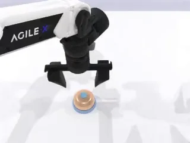
A1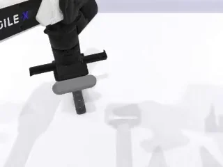
A2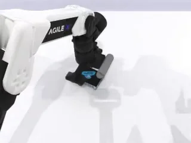
A3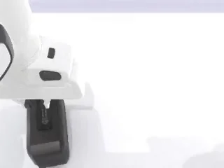
B1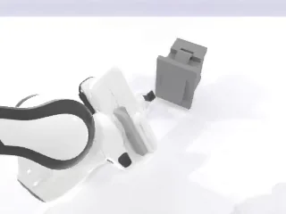
B2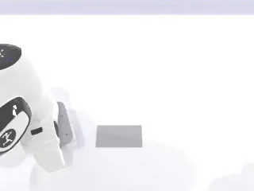
B3(b) Evaluation: task sets swapped
0 demonstrations for every evaluated robot–task pair · 50 episodes per pair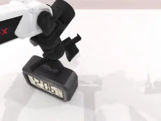
B1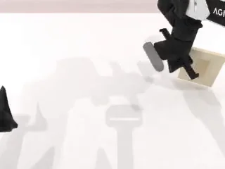
B2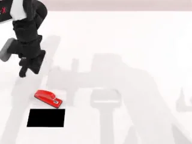
B3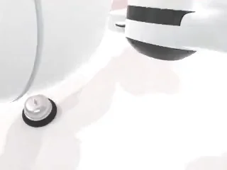
A1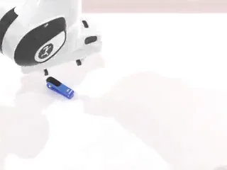
A2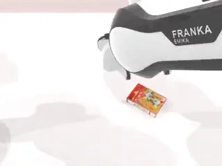
A3Frames in (b) are from actual closed-loop transfer rollouts of the best system. Official RoboTwin 2.0 protocol: evaluation scenes use seeds disjoint from data collection, and only scenes the scripted expert can solve are evaluated; 50 episodes per robot–task pair, 600 per full evaluation. Per-robot transfer rates average three tasks (best system vs. the π0 policy trained on raw padded joint actions, Table I). Task competence can only have crossed through the shared latent action space and policy. Original Fig. 2.
{kind=link}
Match the similarities of the actions, never the actions themselves.
A standard latent action model (inverse + forward dynamics) gets one extra loss: within a batch, the pairwise cosine similarities of the latent actions are trained to match the pairwise similarities of the corresponding ground-truth action sequences. Because no robot action is ever predicted, the latent does not need to encode embodiment specifics.
![Method diagram. Stage 1: an inverse dynamics model encodes pairs of observations into latent actions; a forward dynamics model reconstructs the future observation (reconstruction loss); the pairwise similarity matrix of latent actions is aligned with the pairwise similarity matrix of ground-truth action sequences (similarity loss). Stages 2 to 4: the trained IDM annotates the dataset, a per-embodiment decoder is trained from latent actions to actions with an L2 loss, and a latent policy is trained with a behaviour-cloning loss from observations and a task prompt.](assets/method.webp)
{kind=link}
Latent action model
The IDM encodes an observation pair (ot, ot+H) into a latent action zt; the FDM reconstructs the future observation from ot and zt.
Two backbones: a VAE (AdaWorld-style, d = 64, pixel reconstruction, H = 1) and a multi-step model (LAOM-style, d = 1024, feature-space prediction, H ~ U{1..10}).
Action-similarity supervision
On each labeled batch, build two B×B cosine-similarity matrices, one from the latents and one from the ground-truth action sequences, and penalise their difference:
- Where it comes from. The loss form follows ViLA's global-structure similarity term and works as relational knowledge distillation: the latent space matches the teacher's pairwise relations, never its individual targets. ViLA uses it for viewpoint robustness; here it targets cross-embodiment transfer.
- Motion, not pose. Absolute actions become per-step deltas, standardised, flattened over the chunk.
- Tolerant to timing. Pairs are scored at their best alignment over ±2 temporal shifts.
- Mask M. Diagonal always excluded. Cross-robot pairs are excluded for joint-space targets (similarities are only well-defined within an embodiment); with end-effector targets the mask can be dropped, which is the X variant of the ablation.
- Tiny weight. λ = 0.05 on LAOM. Gradients flow back into the IDM.
Policy and decoders
The frozen IDM labels all demonstrations with latent actions. A flow-matching VLA (π0) is trained on the union of both robots' data to predict a chunk of latent actions from the observation and a task prompt.
A small per-embodiment decoder maps latents to that robot's joint actions, trained only on its own labels. At deployment: δe(π(ot, g)), closed-loop. IDM and FDM are discarded.
Each ingredient of the recipe adds transfer.
Closed-loop success rate on RoboTwin 2.0, 50 episodes per robot–task pair, averaged over both robots. Transfer = tasks demonstrated only by the other robot. Same π0 policy, data and protocol for every row except villa-X, which runs its own two-expert ACT-style policy.
From raw robot actions to similarity-supervised latents
One training seed per row, except the highlighted “+ X · cross-robot pairs” row (LAOM + sim-EE-X, ours), which the paper reports as the mean of three trainings with evaluation seeds and scenes fixed (Table I). Hover or focus a row for both values; the full table is below.
Other losses and systems on the same benchmark
ViLA-style and ConLA-style are loss adaptations on the same LAOM backbone: ViLA-style keeps only the weighted InfoNCE term (ViLA-faithful restores structural alignment, λ = 0.05 each); ConLA-style uses the continuous latent in place of ConLA's VQ tokenizer. villa-X runs its full pipeline with its own two-expert ACT-style policy and no standalone decoder.
Decoder fit improves too
Full Table I: closed-loop success rate (%) for every configuration
| Configuration | Aloha own | Aloha transfer | Franka own | Franka transfer | In-emb. | Transfer | Overall |
|---|---|---|---|---|---|---|---|
| GT-π0 (padded joint actions) | 76.7 | 33.3 | 30.7 | 14.7 | 53.7 | 24.0 | 38.9 |
| GT-π0-EE (end-effector deltas) | 49.3 | 18.0 | 32.7 | 34.0 | 41.0 | 26.0 | 33.5 |
| AdaWorld (VAE) | 46.7 | 10.7 | 46.0 | 43.3 | 46.4 | 27.0 | 36.7 |
| AdaWorld + sim (λ = 0.1) | 46.0 | 30.7 | 37.3 | 24.0 | 41.7 | 27.4 | 34.5 |
| AdaWorld + sim (λ = 0.05) | 46.0 | 34.0 | 48.0 | 30.7 | 47.0 | 32.4 | 39.7 |
| AdaWorld + sim (λ = 0.02) | 42.0 | 36.7 | 48.0 | 24.0 | 45.0 | 30.4 | 37.7 |
| LAOM (multi-step) | 74.0 | 36.0 | 51.3 | 36.0 | 62.7 | 36.0 | 49.3 |
| LAOM + pred (action head) | 70.7 | 46.0 | 60.7 | 22.0 | 65.7 | 34.0 | 49.9 |
| LAOM + sim (joint deltas) | 72.0 | 40.7 | 60.0 | 51.3 | 66.0 | 46.0 | 56.0 |
| LAOM + sim-EE (end-effector deltas) | 75.3 | 55.3 | 65.3 | 50.7 | 70.3 | 53.0 | 61.7 |
| LAOM + sim-EE-X (+ cross-robot pairs) — ours | 77.3 | 65.3 | 61.3 | 57.3 | 69.3 | 61.3 | 65.3 |
| LAOM + sim-EE-X-MV (+ wrist views) | 79.3 | 58.7 | 63.3 | 33.3 | 71.3 | 46.0 | 58.7 |
| ViLA-style (weighted InfoNCE) | 73.3 | 62.7 | 66.7 | 64.0 | 70.0 | 63.3 | 66.7 |
| ConLA-style (verb-class contrast) | 38.0 | 10.7 | 34.0 | 20.0 | 36.0 | 15.3 | 25.7 |
| ViLA-faithful (both loss terms) | 71.3 | 56.0 | 63.3 | 48.7 | 67.3 | 52.3 | 59.8 |
| villa-X (full pipeline) | 72.7 | 19.3 | 37.3 | 25.3 | 55.0 | 22.3 | 38.6 |
| CLAM (co-trained decoder) | 64.0 | 37.3 | 55.3 | 53.3 | 59.6 | 45.3 | 52.5 |
Own / transfer = tasks demonstrated by the executing robot / by the other robot; each cell averages three tasks. Aggregate columns average the two robots or all twelve pairs. One training seed per row unless noted; the LAOM + sim-EE-X row is the mean over three trainings with evaluation seeds and scenes fixed (the paper reports ± sample standard deviation, not reproduced here). Bold marks column maxima among individual runs. sim = similarity supervision, EE = similarities on end-effector deltas, X = cross-embodiment pairs included, MV = wrist cameras added to the LAM input. villa-X uses its own two-expert ACT-style policy without a standalone decoder.
Fewer labels, smaller policy: the transfer benefit stays.
10% of the action labels largely keep the gain
Lines connect evaluated fractions only. Curves are non-monotonic; the paper makes no fewer-is-better claim.
Transfer survives a 60× smaller policy
The policy sets the absolute level; the latent actions carry the transfer.
Table II: label-efficiency study (in-embodiment / transfer / 4-cell average, %)
| LAM labels | Episodes / robot | Similarity · full decoder | Similarity · restricted decoder | InfoNCE · full decoder |
|---|---|---|---|---|
| 0% | 0 | 62.65 / 36.0 / 49.3 | – | – |
| 1% | 2 | 65.3 / 36.3 / 50.8 | 11.0 / 9.0 / 10.0 | 64.0 / 39.4 / 51.7 |
| 5% | 8 | 69.7 / 58.7 / 64.2 | 25.35 / 16.0 / 20.7 | – |
| 10% | 15 | 70.35 / 65.7 / 68.0 | 25.7 / 31.0 / 28.3 | 70.0 / 62.0 / 66.0 |
| 20% | 30 | 71.65 / 65.7 / 68.7 | 53.0 / 47.0 / 50.0 | – |
| 50% | 75 | 72.7 / 68.3 / 70.5 | 70.35 / 62.3 / 66.3 | 67.7 / 61.7 / 64.7 |
| 100% | 150 | 69.3 / 61.3 / 65.3 | 69.3 / 61.3 / 65.3 | 70.0 / 63.3 / 66.7 |
Label fraction = fraction of episodes whose action labels reach the similarity loss. A full decoder uses all 150 labeled episodes per robot; a restricted decoder uses the same subset as the loss.
Best configuration of the study.
- Multi-step LAM (LAOM backbone) pretrained from the shared head camera only. No wrist views.
- Similarity targets on end-effector deltas, standardised per dimension. Plausibly because end-effector motion can stay similar across arm configurations while joint space cannot.
- Cosine similarity with a ±2-step sliding window, symmetrised with an element-wise max.
- Within- and cross-embodiment pairs, self-pairs excluded. Dropping the embodiment mask is what lets the loss align latents across robots: 53.0 → 61.3 transfer.
- λ = 0.05 for the LAOM backbone. Effective strength is backbone-dependent because reconstruction scales differ.
- Frozen IDM annotates all demos; one latent policy for all embodiments; one decoder per robot trained on all of its labels.
- Two embodiments, both bimanual arms with grippers, in simulation. More heterogeneous embodiments remain future work.
- One training seed per configuration in the main table, except the selected LAOM + sim-EE-X row, which is averaged over three trainings.
- Backbone-dependent gain. On the VAE backbone, similarity supervision lifts transfer from 27.0 to at most 32.4; the comparison with action prediction is established on LAOM.
- Constant offsets only. The ±2-step window does not handle motions at different speeds; DTW-style alignment is left to future work.
- Scale may close the gap. Large-scale training shows cross-embodiment emerging from data alone, at a much larger compute cost; this recipe targets the low-data regime.
- Only similarities are needed, not actions. The loss extends naturally to labels such as human wrist trajectories: a path to training latent action spaces on cheap, heterogeneous supervision.
BibTeX
@article{alvarez2026actionsimilarity,
title = {Improving Cross-embodiment Transfer in Latent Action Models with Action-Similarity Supervision},
author = {Alvarez, Maxime and Caballero, Renzo and Matsushima, Tatsuya and Iwasawa, Yusuke and Matsuo, Yutaka},
year = {2026},
note = {Preprint}
}